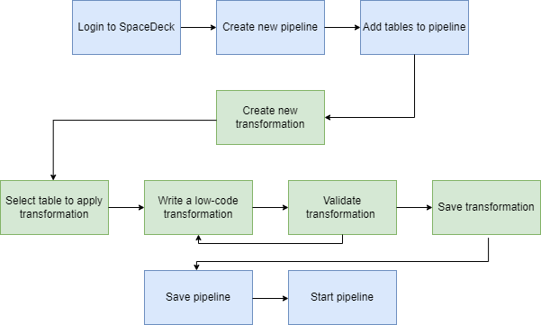

A data pipeline is a method of transporting data from one place to another. Acting as a conduit for data, these pipelines should enable efficient processing, transformation, and delivery of data to the desired location.
Through data cleansing and transformation processes, data pipelines enhance data quality and ensure accuracy for analysis and decision-making. By maintaining high data quality standards, organizations can rely on trustworthy insights to drive our customer's business activities.
Low-code transformation will be created and updated through our SpaceDeck UI. Refer to the SpaceDeck Pipeline page for more details.
Initially,
FILTER (aka WHERE) clause
Calculated column - Calculation of VAT, mathematical operations, string operations, date operations, etc.
Calling external REST API function - Calculation of insurance risk based on captured transaction record
